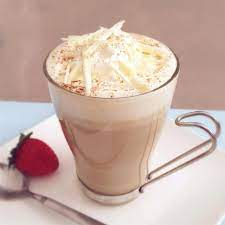

White Chocolate Latte

Description:
Let's make a delicious White Chocolate Latte, that is easy, quick to make and absolutely delicious!
Ingredients:
- 1½ cups milk
- 1 tablespoon heavy cream
- ⅛ teaspoon vanilla extract
- 1 tablespoon white sugar
- ½ cup brewed espresso
- ¼ cup white chocolate chips, chopped
Steps:
- Combine the milk and cream in a saucepan, and whisk over high heat until hot and frothy.
- Remove from heat and stir in the vanilla and sugar.
- Whisk together hot espresso and white chocolate chips in a mug until smooth.
- If you are making two, pour half into another mug. Top with the frothy hot milk and stir to blend in the flavoring.